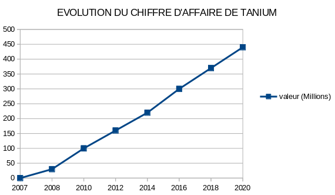

Suite à sa création officielle en 2007 par Orion HINDAWI, ainsi que son père David HINDAWi, TANIUM n'a fait que croitre. Après 5 années consacrées au développement de TANIUM Platform, qui est aujourd'hui le produit phare de l'entreprise. Dès 2014, une levée de fond de 90 millions de dollars leur permettra de prendre une nouvelle dimension. En 2015, dans le cadre d'un projet d'expansion vers l'Europe, l'Afrique et l'Asie Pacifique, TANIUM a réussi à lever 200 millions de dollars. Ce qui fait à ce moment précis passer sa valorisation à 3.5 milliards de dollars, lui octroyant le statut de licorne (entreprise non cotée en bourse valorisée à plus d'un milliard. Ces nouveaux moyens leur permettront de sortir en 2016 de mettre à jour leur plateforme.En 2018, une nouvelle levée de fond leur permettra d'atteindre une valorisation à 3.5 millards de dollars, puis de presque la tripler en atteignant les 9 milliards de dollars deux ans plus tards. Il est important de rappeler que la valorisation d'une entreprise ne correspond pas à ce qu'elle possède, elle représente en réalité la somme des flux de trésorerie (cash-flows) prévisionnels qui seront potentiellement dégagés dans les cinq à dix prochaines années. En 2022, afin de diversifier son offre et de s'ouvrir à une clientèle plus large TANIUM a officiellement lancé son service de Cloud.
Associés à une équipe de personnes parmi les plus doués, possédant une profonde expérience du marché, David et Orion Hindawi ont consacré cinq ans au développement de Tanium Platform, dans le but de s'assurer que leur entreprise s'adapterait aux plus grands réseaux mondiaux. Aujourd'hui, TANIUM transforme la façon dont les grandes entreprises gèrent et sécurisent leurs endpoints contre des cybermenaces en constante évolution.
En 15 années d'expérience, TANIUM a eu le temps d'apprendre à aider les entreprises à se protéger. En plus des entreprises, 5 branches de la défense des états-unis sont également clients et partenaires de l'entreprise.
Si l'on devait classer TANIUM uniquement avec son nombre de salariés, TANIUM pourrait être considérée comme une entreprise de taille intermédiaire.
En aidant les entreprises de 18 pays différents, TANIUM contribue à la sécurité d'entreprises de différentes horizons. Et ce depuis 7 ans maintenant.
La croissance qu’a connu TANIUM depuis sa création est constante. À l’heure actuelle ils n’ont jamais régressé ni même stagné. Symbole d’une gestion efficace de cette entreprise qui a le profil d’une société se construisant et se développant sur des bases solides plutôt que sur un effet de popularité éphemere, qui rendrait les perspectives d’évolution de l’entreprise plutôt instables à l’image d’une entreprise comme myspace.com qui a rapidement fait faillite.
Toutes les infrastructures, notamment les états et les entreprises de taille moyenne ou plus, en auront probablement besoin d’ici quelques années. C’est d’ailleurs pour cela que des états comme la France ou encore les États-Unis en ont fait une priorité nationale. Nous pouvons voir que c’est en Amérique du nord que ce domaine prend le plus de place, suivi par l’Amérique du sud ainsi que l’Europe. Les chercheurs prévoient tous une nette évolution de ce marché, certains prévoient même qu’il pourrait doubler de volume d’ici 2030.